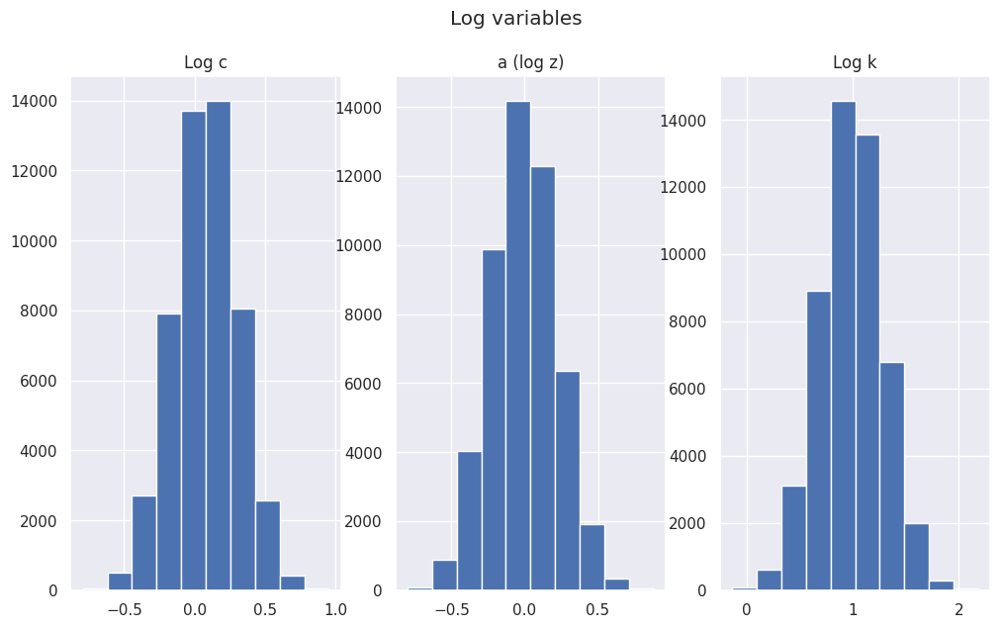
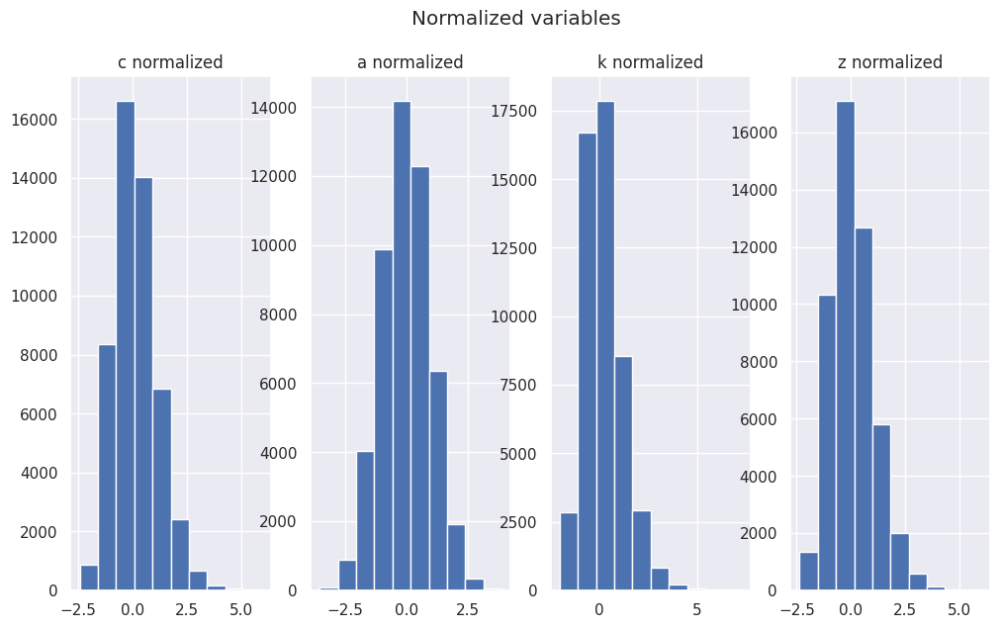
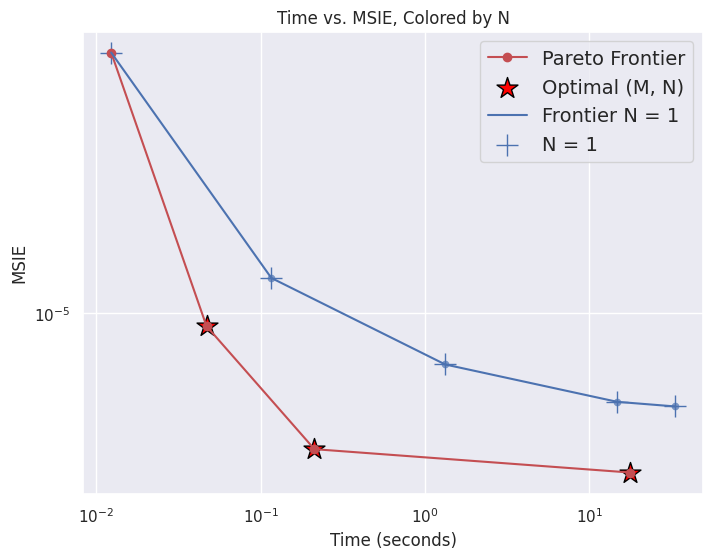
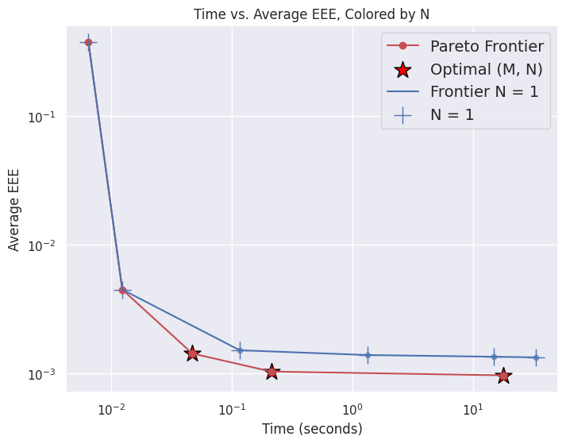

Introduction
This blog post is about my work on a generalization of the Parameterized Expectations Algorithm, available here.
The Parameterized Expectations Algorithm (PEA) is a classic computational approach to numerically “solve” economic models with rational expectations, i.e. finding an approximate solution. Usually, to solve economic models of this type, one has to find a policy function (e.g. how much to consume today, given a current level of capital) that satisfies a functional equation that holds in expectation (e.g. the Euler equation). The PEA flips this idea on its head: if we know the expectation term, we can recover the unknown policy function. For several reasons, this works better this way.
In my view, the paper A Generalization of the Parameterized Expectations Algorithm can be read from two angles:
TL;DR 1 [Practical side]: This paper is a variance-reduced version of standard PEA that uses multiple innovation draws per state vector. The optimal number of innovation draws (given a fixed computational budget constraint) is calculated in closed form using only a small number of hyperparameters.
TL;DR 2 [Theoretical side]: This paper shows that there is a deep connection between the modern neural network (NN) computational approaches (e.g. Deep Equilibrium Nets; All-in-One Operator; bc-MC Operator and the old-school PEA. This connection can be summarized as: NN + bc-MC operator + backpropagation ≈ multi-innovation-draws PEA + OLS.
On the one hand, the result of TL;DR 2 is expected, because both approaches share many features (Monte Carlo integration, focus on the ergodic set for the state vector). On the other hand, this could be surprising because there are also substantial differences: NNs are highly non-linear and their parameters are tuned using gradient descent and backpropagation, while the PEA typically relies on a linear or log-linear model, where the parameters are calculated using linear or non-linear least squares.
I. Theory
Setting
In many cases, solving an economic model involves finding the parameter vector $\theta$ that minimizes a loss function of the form:
$$ L(\theta) = E_{s} \Big( \Big[ E_{\varepsilon}(f(s, \varepsilon | \theta )) \Big]^2 \Big) $$
where $s$ is a state vector, $\varepsilon$ a zero-mean random innovation vector and $f(.)$ a function that depends on the model. The expectation with respect to $\varepsilon$ is the usual expectation that shows up in Euler equations. The expectation with respect to the state vector $s$ is a bit more unusual, because we usually think about numerically solving an economic model using a fixed grid for $s$. Here we are saying: “I want to find $\theta$ such that the Euler equation holds, for all economically relevant values of the state vector $s$“, in the sense of minimizing the expected squared Euler residual over the ergodic distribution of states.
Focusing on the ergodic distribution is a nice feature because large parts of the state space are actually never visited or visited with very small probability. Here, we enforce accuracy where the economy actually spends time, rather than uniformly over an arbitrary grid.
With the NN computational approaches, $\theta$ is usually the parameter vector of a large NN (sometimes called “weights and biases”), that outputs the endogenous decision of agents (e.g. consumption functions of $A$ agents). The parameter vector $\theta$ can be calculated using gradient descent, using the update rule:
$$ \theta_{i+1} = \theta_{i} - \gamma \nabla_{\theta} L(\theta_{i}) $$
Where the gradient $\nabla_{\theta} L(\theta_{i})$ can be efficiently calculated using automatic differentiation and backpropagation, as long as you use Pytorch, Tensorflow, or something similar.
Single or double Monte Carlo?
The loss function $L(\theta)$ contains two nested expectations. The “outside” expectation $E_{s}$ is standard and we approximate it using Monte Carlo integration (i.e. drawing $M$ samples and calculating the average: $E_{s} \approx 1/M \sum_{i=1}^{M}$).
There is a subtle point for the “inside” (conditional on $s$) expectation $E_{\varepsilon}$. If the exogenous innovation vector $\varepsilon$ has discrete support (e.g. discrete Markov chain), $E_{\varepsilon}$ can be calculated exactly. For continuous distributions, one may use a deterministic quadrature scheme (e.g. Gauss-Hermite quadrature).
However, if $\varepsilon$ is high-dimensional and/or continuous, one may instead use Monte Carlo integration to approximate the “inside” expectation operator ($E_{\varepsilon} \approx 1/N \sum_{i=1}^{N}$). The subtlety comes from the fact that taking the square of the empirical mean creates a bias, because of the variance formula $Var(X) = E(X^2) - E(X)^2 \Leftrightarrow E(X^2) = E(X)^2 + Var(X)$. A simple workaround consists in taking two independent copies of $\varepsilon$, denoted by $\varepsilon^1$ and $\varepsilon^2$, and using the fact that for independent variables, the product of expectations is the expectation of the product: $E[X_1 \times X_2] = E[X_1] \times E[X_2] = E[X] \times E[X] = E[X]^2$. This is the trick behind the All-in-One Operator, which, applied to the loss function above, gives:
$$ L_{M}(\theta) = \frac{1}{M} \sum_{m=1}^{M} f(s_m, \varepsilon^{1}_m | \theta ) f(s_m, \varepsilon^{2}_m | \theta ) $$
But nothing prevents you from using more independent copies of $\varepsilon$. For instance, using three copies, one has $ \frac{1}{3}E[X_1 \times X_2] + \frac{1}{3}E[X_1 \times X_3] + \frac{1}{3}E[X_2 \times X_3] = \frac{1}{3} E[X]^2 + \frac{1}{3} E[X]^2 + \frac{1}{3} E[X]^2 = E[X]^2$. One may even take $N$ independent copies of $\varepsilon$, in which case you get the bc-MC Operator:
$$ L_{M,N}(\theta) = \frac{2}{MN(N-1)} \sum_{m=1}^{M } \sum_{1\leq i < j}^{N} f(s_m, \varepsilon^{i}_m | \theta ) f(s_m, \varepsilon^{j}_m | \theta ) $$
Using more independent copies tends to reduce the integration error, at the cost of adding more computing time.
What about the PEA?
The PEA is easier to present using an example. Consider for instance a representative household choosing consumption $c_t$ and next period’s capital $k_{t+1}$ to maximize expected utility:
$$ \max_{(c_t,k_{t+1})_{t=0}^{\infty}} \; E_0 \sum_{t=0}^\infty \beta^t \frac{c_t^{1-\sigma} - 1}{1-\sigma} $$
subject to the resource constraint: $$ k_{t+1} = z_t k_t^{\alpha} - c_t + (1-\delta)k_t $$
and the law of motion for TFP: $$ \log(z_{t+1}) = \rho \log(z_t) + \varepsilon_{t+1} $$
The associated FOC is: $$ c_t^{-\sigma} = \beta E_t \big( c_{t+1}^{-\sigma} \left[\alpha z_{t+1} k_{t+1}^{\alpha-1} + 1-\delta \right] \big) $$
which can also be rewritten as:
$$ \frac{c_{t}^{-\sigma} - c_{ss}^{-\sigma}}{c_{ss}^{-\sigma}} = E_t \big( \beta \big(\frac{c_{t+1}}{c_{ss}} \big)^{-\sigma} \left[\alpha z_{t+1} k_{t+1}^{\alpha-1} + 1-\delta \right] - 1 \big) $$
Now define $E_t[\phi_{t+1}]$ as the right-hand side of the previous equation. That is,
$$ \phi_{t+1} \equiv \beta \big(\frac{c_{t+1}}{c_{ss}} \big)^{-\sigma} \left[\alpha z_{t+1} k_{t+1}^{\alpha-1} + 1-\delta \right] - 1 $$
Note that if we know the value of the conditional expectation, we can recover the implied current consumption using:
$c_t = c_{ss} (1 + E_t[\phi_{t+1}])^{-1/\sigma}$
Knowing the current consumption, we can iterate the model forward and keep repeating this process. Yet, we do not know $E_t[\phi_{t+1}]$, so it appears that we are stuck.
One solution is to assume that the conditional expectation is a linear function of some selected state variables: $$ \phi_{t+1}(\theta) = \theta_0 + \theta_1 \log k_t + \theta_2 \log z_t + \theta_3 (\log k_t)^2 + \theta_4 (\log z_t)^2 + \theta_5 \log k_t \times \log z_t + \epsilon_t $$
or more compactly written as: $$ \phi_{t+1}(\theta) = s_{t}^{T} \theta + \epsilon_t $$
The PEA then proceeds in two steps:
- For a given vector $\theta^{(i)}$, simulate the economy forward and store the data
- Given the data from step 1, update $\theta^{(i)}$ using a convex combination $\theta^{(i+1)} = \gamma \theta^{(i)} + (1 - \gamma) \theta^{OLS}$, where $\theta^{OLS}$ is the ordinary least squares estimate (OLS) of regressing $\phi_{t+1}(\theta^{(i)})$ on the state vector $s_t$.
This process is repeated until the parameter is no longer meaningfully updated: $d(\theta^{(i+1)}, \theta^{(i)}) \leq \text{tol}$, where $\text{tol}$ is a small real number, meaning that the actual guess for the conditional expectation matches the realized values.
For future reference, note that $\theta^{OLS}$ solves the normal equations:
$$ \frac{-2}{T} \sum_{t=1}^{T} s_t \Big( \phi_{t+1}(\theta^{(i)}) - s_t^{T} \theta^{OLS} \Big) = 0 $$
Back to the bc-MC operator
As said previously, when using NN, the gradient of the loss function can be easily and efficiently calculated using backpropagation, as long as one uses the appropriate software (e.g. Pytorch, Tensorflow). Let’s now consider what happens when we want to calculate the gradient $\nabla_{\theta} L_{M,N}(\theta)$ “manually”. But let’s do that under two “PEA-style” restrictions:
- $f(s_m, \varepsilon^{i}_m | \theta ) = g(s_m, \varepsilon^{i}_m | \theta) - h(s_m, | \theta)$,
- $h(s_m, | \theta) = s_m^T \theta$.
The first assumption is a separability assumption, which implies that when the loss function is equal to zero, $h(.)$ is the conditional expectation $ E_{ \varepsilon} [ g(s_m, \varepsilon^{i}_m | \theta) ]$. The second assumption asserts that this conditional expectation is a linear function of the state vector $s_m$. After some intermediate calculations (see the paper), one gets that the gradient is given by:
$$ \nabla_{\theta} L_{M,N}(\theta) = \frac{-2}{M} \sum_{m=1}^{M} s_m \Big( \Big[ \frac{1}{N} \sum_{i=1}^{N} g(s_m, \varepsilon^{i}_m | \theta) \Big]- s_m^{T} \theta^{OLS} \Big) + R_{M,N}(\theta) $$
Note that the first term is identical to OLS normal equations above, where the dependent variable is an average over $N$ realizations $g(s_m, .)$. If we draw a single innovation per realization of the state vector ($N=1$), we are back to standard PEA.
The second term $R_{M,N}(\theta)$ is a bit nasty. It captures the fact that we are aiming at a “moving target”: the conditional expectation is not a simple “fixed” independent variable; it also depends on the parameter $\theta$ we are trying to estimate. Fortunately, it is equal to zero in expectation at stationary points of the gradient ($\nabla_{\theta} L_{M,N}(\theta^{*}) = 0$). Practically, this means that we can focus on minimizing the first part of $\nabla_{\theta} L_{M,N}(\theta)$ (the “averaged OLS problem”), which is no more than a simple OLS regression of $y_m = \frac{1}{N} \sum_{i=1}^{N} g(s_m, \varepsilon^{i}_m | \theta)$ on $s_m$. Hence, we are back to the PEA, with the possibility of more accurately calculating the conditional expectation using more innovation draws.
Variance reduction under a computational budget constraint
At this stage, it is not necessarily obvious that using more innovation draws per state is really needed. If more accuracy is needed when estimating $\theta$ at the OLS stage, why don’t we simply simulate longer series in step 1 of the PEA? Or said differently, let’s increase $M$ and call it a day. Spoiler alert: the reason is that there are asymmetries between drawing more state and innovation vectors, which I discuss below.
First, note that drawing more state vectors is essentially a serial computation, because the state of the economy today depends on what happened yesterday. Instead, drawing more innovation vectors can be easily realized in parallel (given the current state, future realizations can be explored using a parallel for loop). This point is not even mentioned or used in the paper.
Second, there are asymmetric costs between simulating the economy and the OLS step. Simulating the economy forward with $M$ steps, while using $N$ independent innovation draws per state vector, has a computational complexity of $O(MN)$. The computational complexity of the OLS estimator with $M$ observations and $k$ explanatory variables is approximately $O(Mk^2)$. Hence, increasing the length of the simulation ($M$) comes with a penalty at the OLS stage, which is not the case for increasing $N$, because additional innovation draws are first averaged before being used at the OLS stage. This discussion implies the following timing model ($T$ in seconds) for the full simulation + OLS package:
$$ T = \alpha_0 + \alpha_{M} M + \alpha_{MN} M N $$
Third, in general the distribution of the innovation vector is known, while the ergodic distribution of the state vector is unknown and only sequentially approximated during the minimization process. This matters because with known distributions, we can use low-discrepancy sequences to approximate $E_{\varepsilon}$ instead of using simple random draws.
The above equation gives us a good model on how computing time changes with $M$ and $N$. The parameters $\alpha_{M}$ and $\alpha_{MN}$ can be estimated by varying $M$ and $N$ and using an OLS regression.
We also need to understand how the choice of $M$ and $N$ impacts the accuracy of our numerical solution. In the paper, under the assumption that the state vectors are i.i.d, I show that the expected average squared forecast error of the OLS model is proportional to:
$$ \frac{1}{N^{\alpha}} \frac{k}{M - k - 1} $$.
where $\alpha$ is between 1 (for standard random sampling) and 2 (low-discrepancy sequence in an ideal case).
To simplify things, let’s consider the random sampling case ($\alpha = 1$). Under that assumption, if one minimizes the expected average squared forecast error of the OLS model for a given computational budget $T$, one finds:
$$ M^{\star} = \sqrt{\frac{(T - \alpha_{0}) (k+1)}{\alpha_{M}}}$$ $$ N^{\star} = \frac{\alpha_{M}}{\alpha_{MN}} \big( \frac{M^{\star}}{k+1} - 1 \big)$$
where we have to round these numbers to the nearest positive integers. See the paper for the general case where $\alpha \neq 1$. The formula is more convoluted, but still manageable.
The equation for $M^{\star}$ makes sense. If the cost of the OLS step decreases ($\alpha_{M}$ lower), the optimal length of the simulation ($M^{\star}$) increases. If the linear model for the conditional expectation has more explanatory variables ($k$), the optimal length of the simulation must increase.
The equation for $N^{\star}$ is also intuitive. If the cost of the simulation step decreases ($\alpha_{MN}$ lower), the optimal length of the simulation ($N^{\star}$) increases.
Note that the special case “standard PEA” ($N^{\star}=1$) does occur when $\alpha_{M} \rightarrow 0$. But in general $N^{\star} \approx \frac{\alpha_{M}}{\alpha_{MN}} \frac{M^{\star}}{k+1} $ is often bigger than 1.
Extension to serially correlated state vectors
The i.i.d. assumption for the state vectors is a bit too restrictive. Often, data comes from serially correlated series. For instance, the logarithm of TFP is often assumed to be AR(1):
$$ \log(z_{t+1}) = \rho \log(z_{t}) + \varepsilon_{t+1} $$
with $ | \rho |< 1 $ and $\varepsilon$ an i.i.d. zero-mean Gaussian random variable. Under the assumption that the state vector $s_t$ has such an AR(1) structure, with persistence parameter $ | \rho |< 1 $, the new optimal value for $M$ is given by:
$$ M^{\star \star} = M^{\star}\frac{1 + \rho^2}{1 - \rho^2} $$
This point appears in the Online Appendix of the paper.
The serial correlation correction term $\frac{1 + \rho^2}{1 - \rho^2}$ increases the optimal value for $M$. This makes sense, because with serially correlated observations, each realization of $s_t$ is less information-rich (it is correlated with $s_{t-1}$). The larger the value for $|\rho|$, the bigger this correction term is.
Extension to log-linear models
Often, economic models are such that the logarithm of the conditional expectation is a linear function of the state vector. Or more generally, it is linear in a continuous transformation of the state vector denoted by $x_t$ (e.g. taking logs):
$E_{\varepsilon}\left[g(\boldsymbol{s}_t, \varepsilon) \mid \boldsymbol{s}_t \right] = \exp(\boldsymbol{x}_t’ \boldsymbol{\theta})$.
Fortunately, we can reuse the above framework, as discussed in the Online Appendix.
At the OLS regression step, we can simply regress $\log(y_m)$ on $x_t$, where $y_m = \frac{1}{N} \sum_{i=1}^{N} g(s_m, \varepsilon^{i}_m | \theta)$, as before.
II. Numerical example: a model with a borrowing constraint
The PEA gracefully handles economic models with inequality constraints, so let’s study a standard consumption-savings problem, complicated by an occasionally binding investment constraint. The trick is to treat the Lagrange multiplier on the occasionally binding investment constraint as a residual variable that can be adjusted ex post.
A central planner chooses consumption $c_t$ and next period’s capital $k_{t+1}$ to maximize expected lifetime utility
$$ \max_{(c_t, k_{t+1})_{t=0}^{\infty}} \; E_0 \sum_{t=0}^\infty \beta^t \frac{c_t^{1-\sigma}-1}{1-\sigma} $$
subject to:
1) a resource constraint: $$ k_{t+1} = z_t k_t^\alpha - c_t + (1-\delta)k_t, $$
2) a constraint on investment: $$ k_{t+1} \geq (1-\delta)k_t, $$
3) the law of motion for TFP: $$ \log(z_{t+1}) = \rho \log(z_t) + \varepsilon_{t+1}. $$
The associated FOCs are:
$$
c_t^{-\sigma} - \mu_t = \beta E_t \big( c_{t+1}^{-\sigma} \left[\alpha z_{t+1} k_{t+1}^{\alpha-1} + 1-\delta \right] - \mu_{t+1} (1 - \delta) \big),
$$
$$ \mu_t ( k_{t+1} - (1-\delta)k_t) = 0 $$
$$ \mu_t \geq 0 $$
Expectation function $E_t[\phi_{t+1}]$:
Let us consider: $$ \phi_{t+1} \equiv \beta \Big( c_{t+1}^{-\sigma} \left[\alpha z_{t+1} k_{t+1}^{\alpha-1} + 1-\delta \right] - \mu_{t+1} (1 - \delta) \Big)$$
When the investment constraint does not bind ($\mu_t = 0$), the above FOC equation can be written as:
$$ c_t^{-\sigma} = Et[\phi{t+1}] $$
So if we know $ E_t[\phi_{t+1}]$, we can find the implied consumption today. As in standard PEA, let’s assume a parametric expression for the conditional expectation. Let’s use the following log-log model:
$$ \log(E_t[\phi_{t+1}]) = \theta_0 + \theta_1 \log k_t + \theta_2 \log z_t + \theta_3 \left(\log k_t\right)^2 + \theta_4 \left(\log z_t\right)^2 + \theta_5 \log k_t \cdot \log z_t = \boldsymbol{s}_t’ \boldsymbol{\theta} $$
Implied consumption
Under the assumption that the constraint does not bind ($\mu_t = 0$), consumption in the current period is given by:
$$ \tilde{c}_t = \exp(\boldsymbol{s}_t’ \boldsymbol{\theta})^{-1/\sigma} $$
This consumption choice $\tilde{c}_t$ implies a savings choice: $\tilde{k}_{t+1} = z_t k_t^\alpha - \tilde{c}_t + (1-\delta)k_t$.
Two cases can occur:
- If $\tilde{k}_{t+1} \geq (1-\delta)k_t$, then the irreversible investment constraint does not bind:
$$ c_t = \tilde{c}_t $$ $$ k_{t+1} = \tilde{k}_{t+1} $$ $$ \mu_t = 0 $$
- If $\tilde{k}_{t+1} < (1-\delta)k_t$, then the irreversible investment constraint binds and we recover $c_t$ from the budget constraint: $$ c_t = z_t k_t^\alpha $$ $$ k_{t+1} = (1-\delta)k_t $$ $$ \mu_t > 0 $$
In case 2, the value of the Lagrange multiplier is then:
$$ \mu_t = c_t^{-\sigma} - \beta E_t \big( c_{t+1}^{-\sigma} \left[\alpha z_{t+1} k_{t+1}^{\alpha-1} + 1-\delta \right] - \mu_{t+1} (1 - \delta) \big) \approx c_t^{-\sigma} - \exp(\boldsymbol{s}_t’ \boldsymbol{\theta}) $$
provided that $\exp(\boldsymbol{s}_t’ \boldsymbol{\theta})$ correctly approximates the conditional expectation.
Below is some code in Python that solves this model using this approach.
Packages and Types
Let’s load the required packages and create a Class for convenience (some elements are useless, a clean-up is needed at some point).
%matplotlib inline
import matplotlib.pyplot as plt
import random
import scipy.stats
import chaospy ## for quadrature
from itertools import product
import os
import re
import subprocess
import shutil
import time
import pandas as pd
import numpy as np
from math import sqrt
from matplotlib import pyplot as plt
import matplotlib.cm as cm
import matplotlib.colors as mcolors
import matplotlib.ticker as mticker
import seaborn as sns; sns.set()
from tqdm import tqdm as tqdm
import datetime
from typing import Tuple
class Vector: pass
from scipy.stats import norm
import torch
from torch import nn
from torch.utils.data import DataLoader, Subset, Dataset, TensorDataset
from torch.nn.utils import clip_grad_norm_
# To create copies of NN
import copy
import matplotlib.ticker as mtick
# To use sparse kronecker product
from scipy import sparse
import itertools
# Interpolations
from scipy.interpolate import LinearNDInterpolator
import matplotlib.pyplot as plt
from scipy.interpolate import griddata
from scipy.interpolate import RegularGridInterpolator
# Regressions
import statsmodels.formula.api as smf
import statsmodels.api as sm
from statsmodels.stats.diagnostic import het_breuschpagan
lowess = sm.nonparametric.lowess
import quantecon as qe
from interpolation import interp
from quantecon.optimize import brentq
from numba import njit
import matplotlib.cm as cm
from mpl_toolkits.mplot3d import Axes3D
from matplotlib.ticker import MaxNLocator
import platform,socket,re,uuid,json,psutil,logging, cpuinfo, shutil
from scipy.stats import chi2
# Store economic and bc-MC-PEA parameters
class MyParams():
"""
N: number of draws for innovation vector (per state vector)
M: number of draws for the state vector
...
"""
def __init__(self, N, M, lr, optimizer, nb_epochs, order_gauss,
beta, alpha, gamma, delta, std_tfp, rho_tfp,
regression_two_steps, feasible_GLS, effective_sample_size):
# Economic model parameters
self.beta = beta # Discount factor (patience)
self.alpha = alpha # Capital share in production
self.gamma = gamma # CRRA coefficient
self.one_min_gamma = 1 - gamma #pre-compute
# depreciation rate capital
self.delta = delta
# Standard deviation exo random variables
self.std_tfp = std_tfp #0.01
# Mean value exo random variables
self.mean_tfp = 1.0
# Persistence params
self.rho_tfp = rho_tfp # Persistence log TFP values
# Non stochastic steady state calculations
self.kss = ((1 - self.beta * (1 - self.delta)) / (self.alpha * self.beta)) ** (1 / (self.alpha - 1))
self.std_k = 0 #std. dev capital
self.css = self.kss**self.alpha - self.delta*self.kss
self.std_c = 0 #std. dev consumption
self.zss = 1
self.std_z = 0
self.tol_c = 1e-3 #to prevent negative consumption
# Dependent variable in level or log
self.formula = ""
# Options for OLS regression
self.center_dep_var = False #True #False #demean
self.normalize_dep_var = False #True #False #divide by std. dev
self.nb_expl_vars = 10 # including constant
if self.nb_expl_vars not in (4, 6, 10):
raise ValueError( f"nb_expl_vars must be one of (4, 6, 10); got {self.nb_expl_vars}" )
self.basis = 2 # 1: monomial, 2: Chebyshev
if self.basis not in (1, 2):
raise ValueError( f"basis must be either 1 (monomial) or 2 (Chebyshev); got {self.basis}" )
self.regression_two_steps = regression_two_steps #Use the two-step regression described in appendix (approximation to full GLS)
self.feasible_GLS = feasible_GLS #
if self.regression_two_steps and self.feasible_GLS:
raise RuntimeError("Both regression_two_steps and feasible_GLS are True. Choose one of the options.")
# Correction for serial correlation in dependent variables
self.effective_sample_size = effective_sample_size
self.nb_shocks = 1
## State: Distribution of wealth + TFP (no persistence depreciation shocks)
self.dim_state = 2
## Input for neural net
self.dim_input = 2
self.dim_output = 1
# Nb agents:
self.nb_agents = 1 #One representative household
# Functions
## Utility
if self.gamma != 1:
self.u = lambda c: (1/self.one_min_gamma)*(c**(self.one_min_gamma) - 1)
else:
self.u = lambda c: torch.log(c)
self.u_prime = lambda c: c**(-self.gamma)
self.u_prime_inv = lambda c: c**(-(1/self.gamma))
# bc-MC hyperparameters
self.N = N #number of iid shocks used for each value of the state vector
self.M = M #number of iid realization of the state vector
self.MN = int(M*N)
# To keep constant the number of function evaluations
self.T = int((M*N)/2) #number
self.distribution_shocks = "Normal" #"Normal" #Lognormal
# Learning parameters
self.lr = lr
self.momentum = 0.9 #momentum for SGD with momentum
self.optimizer = optimizer #"Adam" #default: #Adam or SGD or SWA
self.freq_gamma = 0.95 #When using a scheduler for the learning rate, lr_{t} = freq_gamma*lr_{t-1}
self.use_scheduler = False #If true, use a scheduler for the learning rate
self.nb_epochs = nb_epochs
self.freq_scheduler = 1000
# GAUSSIAN QUADRATURE
## INNOVATION VECTOR
strr = "chaospy.Normal(0, self.std_tfp)"
self.distrib = eval('chaospy.J({})'.format(strr))
self.order_gauss = order_gauss
nodes, weights = chaospy.generate_quadrature(self.order_gauss, self.distrib, rule = "gaussian", sparse=True) #dist(self.order_gauss, self.distrib, rule = "gaussian", sp=True)
self.nodes = nodes
self.nodes_flat = self.nodes.flatten() #make 1d array
self.weights = weights
self.weights_torch = torch.tensor(weights)
self.nodes_torch = torch.tensor(np.transpose(self.nodes)) #column=dim. Row=observation
# Save the number of points for the guassian quadrature:
self.N_gaussian = len(self.weights_torch)
# Implied number of points for the current space (T=MN/2 <-> M = 2T/N)
self.M_gaussian = int((2*self.T)/self.N_gaussian)
self.MN_gaussian = self.N_gaussian*self.M_gaussian
# Repeat nodes to match the number of function evaluations for the expectation
self.nodes_torch_repeated = self.nodes_torch.repeat(self.M_gaussian, 1)
def show_params(params, limited=True):
"""
Function to display parameter values
"""
print("learning rate: {}".format(params.lr))
print("nb epochs: {}".format(params.nb_epochs))
print("M: {}".format(params.M))
print("N: {}".format(params.N))
print("MN: {}".format(params.MN))
print("T: {}".format(params.T))
print("optimizer_chosen: {}".format(params.optimizer))
print("use_scheduler: {}".format(params.use_scheduler))
print("center_dep_var: {}".format(params.center_dep_var))
print("normalize_dep_var: {}".format(params.normalize_dep_var))
print("nb_expl_vars: {}".format(params.nb_expl_vars))
print("basis: {}".format(params.basis))
print("regression_two_steps: {}".format(params.regression_two_steps))
print("feasible_GLS: {}".format(params.feasible_GLS))
print("effective_sample_size: {}".format(params.effective_sample_size))
# Plotting options
plot_scale = 0.75
plt.rcParams["figure.figsize"] = (plot_scale*16, plot_scale*9)
# Controlling fontsizes
SMALL_SIZE = 12
MEDIUM_SIZE = SMALL_SIZE + 2
BIGGER_SIZE = SMALL_SIZE + 4
plt.rcParams['legend.fontsize'] = MEDIUM_SIZE
dpi_chosen=600 #control the quality of .png
linewidth_chosen = 2
# Current working directory
current_wd = os.getcwd()
output_extension = "example_1"
output_folder = output_extension + "/"
print(output_folder)
# Create folder if does not exist:
if not os.path.exists(output_folder):
os.makedirs(output_folder)
example_1/
Let’s initialize an instance of MyParams():
# Economic Parameter.
beta_chosen = 0.95 #discount factor
alpha_chosen = 0.3 #production params
std_tfp_chosen = 0.14 # Std log TFP. High value for constraint to bind
gamma_chosen = 1.0 #CRRA parameter
rho_chosen = 0.8 #persistence TFP
delta_chosen = 0.1 #depreciation rate
# bc-MC-PEA hyperparamters
M_chosen = 200 #Nb draws state vector
N_chosen = 2 #Nb draws innovation vector for each realization of the state vector
lr_chosen = 1e-5 #1e-4 #4 #1e-4 #3 #5 #1e-3 #default: 1e-4 #3 #Learning rate. Useful when using gradient descent instead of OLS
nb_epochs_chosen = 2000 #
order_gauss_chosen = 5 #number of Gaussian nodes for integration wrt to innovation vector
optimizer_chosen = "Adam"
# bc-MC-PEA Options
regression_two_steps_chosen = False
feasible_GLS_chosen = False
effective_sample_size_chosen = True
# Extra hyperparamters (not used here)
mu_chosen = 1e-5
mu_threshold = 1e-10
mu_decay_chosen = 1.0
use_Lookahead_chosen = False #Lookahead optimizer
params = MyParams(N_chosen, M_chosen, lr_chosen, optimizer_chosen,
nb_epochs_chosen, order_gauss_chosen,
beta_chosen, alpha_chosen, gamma_chosen, delta_chosen,
std_tfp_chosen, rho_chosen,
regression_two_steps_chosen,
feasible_GLS_chosen, effective_sample_size_chosen)
show_params(params)
learning rate: 1e-05
nb epochs: 2000
M: 200
N: 2
MN: 400
T: 200
optimizer_chosen: Adam
use_scheduler: False
center_dep_var: False
normalize_dep_var: False
nb_expl_vars: 10
basis: 2
regression_two_steps: False
feasible_GLS: False
effective_sample_size: True
Initialization
We use the following update rule for finding $\theta^{*}$:
$\theta^{(i+1)} = \gamma \theta^{(i)} + (1 - \gamma) \theta^{OLS}$, with $\gamma \in (0,1)$.
We need a starting value $\theta^{(0)}$.
Here, let’s solve the model without the irreversible investment constraint using a 1st order-linearization and use some simulated data to estimate $\theta^{(0)}$. This is easy to do thanks to Dynare and this gives us a reasonable starting point.
Below is a somewhat hacky way to get Dynare within Python:
- I write the .mod file of the model without the irreversible investment constraint to disk,
- I call Octave and Dynare to solve and simulate the model at 1st order.
For this to work, you need to have Octave and Dynare installed on your machine (it’s free and open source, see the section “Using Dynare with Octave” here ).
fname = "neogrowth.mod"
dirpath = os.getcwd() # Get the current working directory
fpath = os.path.join(dirpath, fname)
# Content of the .mod file.
file_content_1 = """
% optimal_growth.mod
% Dynare file for the standard optimal growth model (first-order approximation)
var k c z;
varexo eps;
parameters beta gamma alpha delta rho sigma_eps;
% Parameter values
beta = {beta};
gamma = {gamma}; % CRRA coefficient
alpha = {alpha};
delta = {delta};
rho = {rho_tfp};
sigma_eps = {std_tfp};
model;
% Euler equation (after substituting the marginal utility condition)
c^(-gamma) = beta * c(+1)^(-gamma) * ( alpha * z(+1) * k^(alpha-1) + 1 - delta );
% Resource constraint (law of motion for capital)
k = z * k(-1)^alpha - c + (1-delta)*k(-1);
% Technology process (AR(1) in logs)
log(z) = rho*log(z(-1)) + eps;
end;
initval;
% Initial guesses for the steady state
k = ((alpha*beta)/(1 - beta*(1-delta)))^(1/(1-alpha));
c = ((alpha*beta)/(1 - beta*(1-delta)))^(alpha/(1-alpha)) - delta*(((alpha*beta)/(1 - beta*(1-delta)))^(alpha/(1-alpha)));
z = 1;
eps = 0;
end;
steady;
check;
shocks;
var eps = sigma_eps^2;
end;
% IRF
stoch_simul(order=1, irf=100);
% SIMULATED SERIES
stoch_simul(periods=50000);
""".format(beta = params.beta, alpha = params.alpha, gamma = params.gamma,
delta = params.delta, std_tfp = params.std_tfp, rho_tfp = params.rho_tfp)
file_content = file_content_1
# Concat stings
# Write the content to the file
with open(fpath, "w") as file:
file.write(file_content)
# Write to disk an Octave script to solve and simulate the model
file_content_1 = r"""
if exist('OCTAVE_VERSION', 'builtin')
function T = cell2table(C, varargin)
if nargin > 1
opts = varargin{2};
varname = opts{1};
else
varname = 'Var1';
end
T = struct();
for i = 1:size(C,2)
T.(varname) = C(:,i);
end
end
function T = struct2table(S, varargin)
T = S;
end
function T = array2table(A, varargin)
if nargin > 1
opts = varargin{2};
varnames = opts{1};
else
nvars = size(A,2);
varnames = cell(1, nvars);
for i = 1:nvars
varnames{i} = sprintf('Var%d', i);
end
end
T = struct();
for i = 1:size(A,2)
if iscell(varnames)
fieldname = varnames{i};
else
fieldname = varnames;
end
T.(fieldname) = A(:,i);
end
end
function writetable(T, filename)
fid = fopen(filename, 'w');
fields = fieldnames(T);
% Write header
for i = 1:length(fields)
fprintf(fid, '%s', fields{i});
if i < length(fields)
fprintf(fid, ',');
else
fprintf(fid, '\n');
end
end
% Number of rows
nRows = length(T.(fields{1}));
% Write data
for row = 1:nRows
for col_idx = 1:length(fields)
col = T.(fields{col_idx});
value = col(row,:);
if iscell(col)
fprintf(fid, '%s', col{row});
elseif ischar(value)
fprintf(fid, '%s', strtrim(value));
elseif isnumeric(value)
fprintf(fid, '%g', value);
else
error('writetable: unsupported data type in column %d', col_idx);
end
if col_idx < length(fields)
fprintf(fid, ',');
else
fprintf(fid, '\n');
end
end
end
fclose(fid);
end
end
% Go to working directory
% cd '/content';
% Run Dynare
dynare neogrowth.mod noclearall
% Postprocess
k_pos = strmatch('k', M_.endo_names, 'exact');
c_pos = strmatch('c', M_.endo_names, 'exact');
z_pos = strmatch('z', M_.endo_names, 'exact');
var_positions = [k_pos; c_pos; z_pos];
Sim_series = oo_.endo_simul(var_positions, :)';
var_names = M_.endo_names_long(var_positions, :);
if ~exist('output/Linearization', 'dir')
mkdir('output/Linearization');
end
% Save steady state values manually
var_list = cellstr(oo_.var_list); % Variable names
ss_values = oo_.mean; % Steady state values
fid = fopen('output/Linearization/SS_values.csv', 'w');
fprintf(fid, 'Variable,MeanValue\n'); % Header
for i = 1:length(var_list)
fprintf(fid, '%s,%g\n', var_list{i}, ss_values(i));
end
fclose(fid);
% Save simulated series
%Sim_table = array2table(Sim_series, 'VariableNames', cellstr(var_names));
%writetable(Sim_table, 'output/Linearization/Sim_series.csv');
% Save Sim_series manually
csvwrite('output/Linearization/Sim_series_only_data.csv', Sim_series);
% Also write header separately
fid = fopen('output/Linearization/Sim_series.csv', 'w');
fprintf(fid, 'k,c,z\n'); % header with variable names
data = Sim_series; % already transposed correctly (observations x variables)
for i = 1:size(data,1)
fprintf(fid, '%g,%g,%g\n', data(i,1), data(i,2), data(i,3));
end
fclose(fid);
% State-space matrices
A = oo_.dr.ghx(oo_.dr.inv_order_var(M_.state_var'), :);
B = oo_.dr.ghu(oo_.dr.inv_order_var(M_.state_var'), :);
control = (1:size(oo_.dr.ghu,1))';
state = M_.state_var';
for j = 1:length(state)
control(control == state(j)) = [];
end
C = oo_.dr.ghx(oo_.dr.inv_order_var(control), :);
D = oo_.dr.ghu(oo_.dr.inv_order_var(control), :);
S_variables_names = M_.endo_names(state,:);
X_variables_names = M_.endo_names(control,:);
shocks_names = M_.exo_names;
% Save variable names
writetable(cell2table(cellstr(S_variables_names)), 'output/Linearization/state_variables_names.csv');
writetable(cell2table(cellstr(X_variables_names)), 'output/Linearization/control_variables_names.csv');
writetable(cell2table(cellstr(shocks_names)), 'output/Linearization/exo_variables_names.csv');
% Save matrices A, B, C, D
csvwrite('output/Linearization/A.csv', A);
csvwrite('output/Linearization/B.csv', B);
csvwrite('output/Linearization/C.csv', C);
csvwrite('output/Linearization/D.csv', D);
% Simulations with shocks
len_T = 10;
e1 = zeros(len_T, 1);
e1(1) = 1.0;
horizon = length(e1) + 1;
shocks = zeros(M_.exo_nbr, horizon);
shocks(strcmp(cellstr(shocks_names), 'eps'), 2:horizon) = e1;
Ssim = zeros(length(state), horizon);
Xsim = zeros(length(control), horizon);
for j = 2:horizon
Ssim(:,j) = A * Ssim(:,j-1) + B * shocks(:,j);
Xsim(:,j) = C * Ssim(:,j-1) + D * shocks(:,j);
end
csvwrite('output/Linearization/Ssim.csv', Ssim');
csvwrite('output/Linearization/Xsim.csv', Xsim');
"""
fname = "solve_neogrowth_octave.m"
dirpath = os.getcwd() # Get the current working directory
fpath = os.path.join(dirpath, fname)
file_content = file_content_1
# Concat stings
# Write the content to the file
with open(fpath, "w") as file:
file.write(file_content)
print("Calculating linearized model using Octave Dynare")
# Call Octave & Dynare
!octave solve_neogrowth_octave.m
Calculating linearized model using Octave Dynare
Starting Dynare (version 6.0).
Calling Dynare with arguments: noclearall
Starting preprocessing of the model file ...
Found 3 equation(s).
Evaluating expressions...
Computing static model derivatives (order 1).
Normalizing the static model...
Finding the optimal block decomposition of the static model...
2 block(s) found:
1 recursive block(s) and 1 simultaneous block(s).
the largest simultaneous block has 2 equation(s)
and 2 feedback variable(s).
Computing dynamic model derivatives (order 2).
Normalizing the dynamic model...
Finding the optimal block decomposition of the dynamic model...
2 block(s) found:
1 recursive block(s) and 1 simultaneous block(s).
the largest simultaneous block has 2 equation(s)
and 2 feedback variable(s).
Preprocessing completed.
Preprocessing time: 0h00m00s.
STEADY-STATE RESULTS:
k 2.62575
c 1.07333
z 1
EIGENVALUES:
Modulus Real Imaginary
0.8 0.8 0
0.838 0.838 0
1.256 1.256 0
6.646e+17 6.646e+17 0
There are 2 eigenvalue(s) larger than 1 in modulus for 2 forward-looking variable(s)
The rank condition is verified.
MODEL SUMMARY
Number of variables: 3
Number of stochastic shocks: 1
Number of state variables: 2
Number of jumpers: 2
Number of static variables: 0
MATRIX OF COVARIANCE OF EXOGENOUS SHOCKS
Variables eps
eps 0.019600
POLICY AND TRANSITION FUNCTIONS
k c z
Constant 2.625746 1.073331 1.000000
k(-1) 0.838003 0.214628 0
z(-1) 0.686992 0.381732 0.800000
eps 0.858741 0.477165 1.000000
THEORETICAL MOMENTS
VARIABLE MEAN STD. DEV. VARIANCE
k 2.6257 0.8267 0.6834
c 1.0733 0.2591 0.0671
z 1.0000 0.2333 0.0544
MATRIX OF CORRELATIONS
Variables k c z
k 1.0000 0.9876 0.7354
c 0.9876 1.0000 0.8327
z 0.7354 0.8327 1.0000
COEFFICIENTS OF AUTOCORRELATION
Order 1 2 3 4 5
k 0.9806 0.9358 0.8755 0.8067 0.7344
c 0.9626 0.9064 0.8393 0.7671 0.6939
z 0.8000 0.6400 0.5120 0.4096 0.3277
MODEL SUMMARY
Number of variables: 3
Number of stochastic shocks: 1
Number of state variables: 2
Number of jumpers: 2
Number of static variables: 0
MATRIX OF COVARIANCE OF EXOGENOUS SHOCKS
Variables eps
eps 0.019600
POLICY AND TRANSITION FUNCTIONS
k c z
Constant 2.627763 1.071313 1.000000
(correction) 0.002018 -0.002018 0
k(-1) 0.838003 0.214628 0
z(-1) 0.686992 0.381732 0.800000
eps 0.858741 0.477165 1.000000
k(-1),k(-1) -0.006461 -0.013885 0
z(-1),k(-1) 0.087580 0.034525 0
z(-1),z(-1) -0.040418 -0.066454 -0.080000
eps,eps 0.473559 0.194394 0.500000
k(-1),eps 0.109475 0.043157 0
z(-1),eps 0.757695 0.311030 0.800000
MOMENTS OF SIMULATED VARIABLES
VARIABLE MEAN STD. DEV. VARIANCE SKEWNESS KURTOSIS
k 2.803683 0.859478 0.738702 1.011294 2.092793
c 1.110625 0.255746 0.065406 0.671535 0.805383
z 1.019190 0.233502 0.054523 0.706720 0.814589
CORRELATION OF SIMULATED VARIABLES
VARIABLE k c z
k 1.0000 0.9824 0.7169
c 0.9824 1.0000 0.8282
z 0.7169 0.8282 1.0000
AUTOCORRELATION OF SIMULATED VARIABLES
VARIABLE 1 2 3 4 5
k 0.9788 0.9302 0.8654 0.7927 0.7174
c 0.9579 0.8965 0.8250 0.7499 0.6752
z 0.7827 0.6114 0.4776 0.3748 0.2973
Total computing time : 0h00m03s
Now, let’s load the simulated series and estimate our first first $\theta^{(0)}$:
#Load simulated data and fit linear model
SS_values = pd.read_csv("output/Linearization/SS_values.csv")
print(SS_values)
Sim_series = pd.read_csv("output/Linearization/Sim_series.csv")
print(Sim_series)
# Load the data
Sim_series = pd.read_csv("output/Linearization/Sim_series.csv")
## Simulate realization conditional expectation
Sim_series['c_plus_1'] = Sim_series['c'].shift(-1)
Sim_series['z_plus_1'] = Sim_series['z'].shift(-1)
Sim_series['k_plus_1'] = Sim_series['k'].shift(-1)
# Conditional expectation
Sim_series['cond_exp'] = params.beta * (Sim_series['c_plus_1']**(-params.gamma)) * ( params.alpha * Sim_series['z_plus_1'] * Sim_series['k_plus_1']**(params.alpha - 1) + 1 - params.delta )
# Production
Sim_series['cash'] = Sim_series['z'] * Sim_series['k']**params.alpha + (1 - params.delta)*Sim_series['k'] - Sim_series['c']
# Log tfp
Sim_series['a'] = np.log(Sim_series['z'])
params.std_z = np.std(Sim_series['z'])
# Centered vars
Sim_series['c_demeaned'] = Sim_series['c'] - params.css
Sim_series['a_demeaned'] = Sim_series['a'] # mean is 0
Sim_series['z_demeaned'] = Sim_series['z'] - params.zss
Sim_series['k_demeaned'] = Sim_series['k'] - params.kss
# Normalize vars:
params.std_c = np.std(Sim_series['c'])
params.std_a = np.std(Sim_series['a'])
params.std_z = np.std(Sim_series['z'])
params.std_k = np.std(Sim_series['k'])
Sim_series['c_normalized'] = Sim_series['c_demeaned']/params.std_c
Sim_series['a_normalized'] = Sim_series['a_demeaned']/params.std_a
Sim_series['z_normalized'] = Sim_series['z_demeaned']/params.std_z
Sim_series['k_normalized'] = Sim_series['k_demeaned']/params.std_k
fig, (ax1, ax2, ax3) = plt.subplots(1, 3)
fig.suptitle('Log variables')
ax1.hist(np.log(Sim_series['c']))
ax1.set_title("Log c")
ax2.hist(Sim_series['a'])
ax2.set_title("a (log z)")
ax3.hist(np.log(Sim_series['k']))
ax3.set_title("Log k")
plt.show()
fig, (ax1, ax2, ax3, ax4) = plt.subplots(1, 4)
fig.suptitle('Normalized variables')
ax1.hist(Sim_series['c_normalized'])
ax1.set_title("c normalized")
ax2.hist(Sim_series['a_normalized'])
ax2.set_title("a normalized")
ax3.hist(Sim_series['k_normalized'])
ax3.set_title("k normalized")
ax4.hist(Sim_series['z_normalized'])
ax4.set_title("z normalized")
plt.show()
# Create a dataframe:
df_Dynare = pd.DataFrame({'k': Sim_series['k'], 'z': Sim_series['z'], 'a': Sim_series['a'],
'k_demeaned': Sim_series['k_demeaned'], 'a_demeaned': Sim_series['a_demeaned'], 'z_demeaned': Sim_series['z_demeaned'],
'k_normalized': Sim_series['k_normalized'], 'a_normalized': Sim_series['a_normalized'], 'z_normalized': Sim_series['z_normalized'],
'cond_exp': Sim_series['cond_exp'],
'log_cond_exp': np.log(Sim_series['cond_exp'])})
print(df_Dynare.head())
# If required, transform explanatory variables (demean, normalize)
if (params.center_dep_var == True) & (params.normalize_dep_var == True):
x1_chosen = "k_normalized"
x2_chosen = "a_normalized"
elif (params.center_dep_var == True) & (params.normalize_dep_var == False):
x1_chosen = "k_demeaned"
x2_chosen = "a_demeaned"
else:
x1_chosen = "np.log(k)"
x2_chosen = "a"
# OLS formula to use, which depends on the number of explanatory variables and on the basis function used.
if params.nb_expl_vars == 4:
# only main + interaction
formula_OLS = (
f"log_cond_exp ~ "
f"{x1_chosen} + {x2_chosen} + {x1_chosen}*{x2_chosen}"
)
elif params.nb_expl_vars == 6:
if params.basis == 1:
# monomial up to degree 2
formula_OLS = (
f"log_cond_exp ~ "
f"{x1_chosen} + {x2_chosen} + {x1_chosen}*{x2_chosen} + "
f"I({x1_chosen}**2) + I({x2_chosen}**2)"
)
else:
# Chebyshev up to order 2
formula_OLS = (
f"log_cond_exp ~ "
f"{x1_chosen} + {x2_chosen} + {x1_chosen}*{x2_chosen} + "
f"I({x1_chosen}**2 - 1) + I({x2_chosen}**2 - 1)"
)
elif params.nb_expl_vars == 10:
if params.basis == 1:
# monomial up to degree 3
formula_OLS = (
f"log_cond_exp ~ "
f"{x1_chosen} + {x2_chosen} + {x1_chosen}*{x2_chosen} + "
f"I({x1_chosen}**2) + I({x2_chosen}**2) + "
f"I({x1_chosen}**3) + I({x1_chosen}**2*{x2_chosen}) + "
f"I({x1_chosen}*{x2_chosen}**2) + I({x2_chosen}**3)"
)
else:
# Chebyshev up to order 3
formula_OLS = (
f"log_cond_exp ~ "
f"{x1_chosen} + {x2_chosen} + {x1_chosen}*{x2_chosen} + "
f"I({x1_chosen}**2 - 1) + I({x2_chosen}**2 - 1) + "
f"I(4*{x1_chosen}**3 - 3*{x1_chosen}) + "
f"I(4*{x2_chosen}**3 - 3*{x2_chosen}) + "
f"I(({x1_chosen}**2 - 1)*{x2_chosen}) + "
f"I({x1_chosen}*({x2_chosen}**2 - 1))"
)
else:
raise ValueError(
f"nb_expl_vars must be one of 4,6,10; got {params.nb_expl_vars}"
)
# estimate model using OLS
model = smf.ols(formula=formula_OLS, data=df_Dynare).fit()
print(model.summary())
plt.hist(model.resid)
plt.show()
coeff_vector = model.params
print(coeff_vector)
coeff_array_0 = model.params.values
print(coeff_array_0)
Variable MeanValue
0 k 2.80368
1 c 1.11063
2 z 1.01919
k c z
0 2.49443 0.995207 0.843225
1 2.49373 1.029550 0.971857
2 2.45133 1.005590 0.921800
3 2.48612 1.036100 1.005670
4 2.58609 1.082710 1.089010
... ... ... ...
49995 2.63105 1.044140 0.895067
49996 2.56844 1.036660 0.925521
49997 2.73110 1.141380 1.176080
49998 2.76882 1.122660 1.060340
49999 2.81345 1.137810 1.075140
[50000 rows x 3 columns]


k z a k_demeaned a_demeaned z_demeaned \
0 2.49443 0.843225 -0.170521 -0.131316 -0.170521 -0.156775
1 2.49373 0.971857 -0.028547 -0.132016 -0.028547 -0.028143
2 2.45133 0.921800 -0.081427 -0.174416 -0.081427 -0.078200
3 2.48612 1.005670 0.005654 -0.139626 0.005654 0.005670
4 2.58609 1.089010 0.085269 -0.039656 0.085269 0.089010
k_normalized a_normalized z_normalized cond_exp log_cond_exp
0 -0.152851 -0.756166 -0.671641 0.972367 -0.028022
1 -0.153666 -0.126588 -0.120568 0.989717 -0.010337
2 -0.203019 -0.361083 -0.335017 0.971439 -0.028977
3 -0.162524 0.025072 0.024291 0.937091 -0.064975
4 -0.046159 0.378120 0.381329 0.896667 -0.109071
OLS Regression Results
==============================================================================
Dep. Variable: log_cond_exp R-squared: 0.959
Model: OLS Adj. R-squared: 0.959
Method: Least Squares F-statistic: 1.315e+05
Date: Wed, 14 Jan 2026 Prob (F-statistic): 0.00
Time: 11:39:46 Log-Likelihood: 82307.
No. Observations: 49999 AIC: -1.646e+05
Df Residuals: 49989 BIC: -1.645e+05
Df Model: 9
Covariance Type: nonrobust
=========================================================================================================
coef std err t P>|t| [0.025 0.975]
---------------------------------------------------------------------------------------------------------
Intercept 0.3344 0.075 4.482 0.000 0.188 0.481
np.log(k) -0.4777 0.071 -6.747 0.000 -0.616 -0.339
a -0.3446 0.076 -4.545 0.000 -0.493 -0.196
np.log(k):a 0.1172 0.065 1.805 0.071 -0.010 0.244
I(np.log(k) ** 2 - 1) -0.1504 0.029 -5.183 0.000 -0.207 -0.094
I(a ** 2 - 1) 0.0180 0.044 0.406 0.685 -0.069 0.105
I(4 * np.log(k) ** 3 - 3 * np.log(k)) 0.0122 0.002 5.189 0.000 0.008 0.017
I(4 * a ** 3 - 3 * a) 0.0118 0.006 1.999 0.046 0.000 0.023
I((np.log(k) ** 2 - 1) * a) -0.0273 0.031 -0.873 0.383 -0.089 0.034
I(np.log(k) * (a ** 2 - 1)) -0.0580 0.043 -1.362 0.173 -0.142 0.026
==============================================================================
Omnibus: 209.185 Durbin-Watson: 1.991
Prob(Omnibus): 0.000 Jarque-Bera (JB): 212.146
Skew: -0.155 Prob(JB): 8.57e-47
Kurtosis: 3.072 Cond. No. 3.12e+03
==============================================================================
Notes:
[1] Standard Errors assume that the covariance matrix of the errors is correctly specified.
[2] The condition number is large, 3.12e+03. This might indicate that there are
strong multicollinearity or other numerical problems.

Intercept 0.334417
np.log(k) -0.477687
a -0.344563
np.log(k):a 0.117191
I(np.log(k) ** 2 - 1) -0.150438
I(a ** 2 - 1) 0.018025
I(4 * np.log(k) ** 3 - 3 * np.log(k)) 0.012195
I(4 * a ** 3 - 3 * a) 0.011829
I((np.log(k) ** 2 - 1) * a) -0.027310
I(np.log(k) * (a ** 2 - 1)) -0.058041
dtype: float64
[ 0.3344173 -0.47768687 -0.34456269 0.11719071 -0.15043791 0.01802458
0.01219452 0.01182905 -0.02730956 -0.05804076]
Estimation of the computational cost model $ T = \alpha_0 + \alpha_{M} M + \alpha_{MN} M N $
In order to use the formulas for $M^{\star}$ and $N^{\star}$, we also need the values for $\alpha_M$ and $\alpha_{MN}$.
One approach is to actually try different values for $(M,N)$, store the computing time, and then use OLS to estimate $\alpha_{M}$ and $\alpha_{MN}$. This is what I do for the paper (see here).
Here, let’s use a shortcut. Let’s pretend we already know the ratio $\frac{\alpha_M}{\alpha_{MN}}$ and that we are using a given value for $M$ (e.g. $M = 1000$). The above formulas, using the serial correlation correction term, tell us that the optimal corresponding choice for $N$ is given by:
$$ N^{\star} = \frac{\alpha_{M}}{\alpha_{MN}} \big(\frac{1 - \rho^2}{1 + \rho^2} \frac{M}{k+1} - 1 \big)$$
Here, I find that $\frac{\alpha_{M}}{\alpha_{MN}} \approx 4.175$. Note that this ratio obviously depends on the model you consider and on the actual software implementation. Here, let’s use a rough estimate for $\frac{\alpha_{M}}{\alpha_{MN}} \approx 4$. If you do not know this ratio and you do not want to estimate it, you may even use rough guesses (e.g. $\frac{\alpha_{M}}{\alpha_{MN}} = 1$).
Below is a function that returns such a $N^{\star}$.
def optimal_N(alpha_ratio: float, rho: float, M: int, k: int) -> int:
# Correct for serial correlation in state vector
rho_sq = rho ** 2
serial_correction = (1 - rho_sq) / (1 + rho_sq)
N_star = alpha_ratio * (serial_correction * ( M / (k + 1) ) - 1)
# Warning if implied value is negative
if N_star < 0:
min_M = (k + 1) * (1 + rho_sq) / (1 - rho_sq)
print(f"Warning: Implied N* = {N_star:.2f} is negative. "
f"M = {M} is too small given rho = {rho}. "
f"Consider using M > {min_M:.0f}.")
return max(1, round(N_star))
Below, let’s use several values for $M$. We then calculate $N^{*}$ based on the above formula.
alpha_ratio = 4.0
list_N = []
list_M = []
list_optimal = []
list_target_M = list(np.array([500, 1e3, 1e4, 1e5, 1e6, 2*1e6]).astype(int))
list_N_temp = [1]
# Create all comnbinations between lists
df_MN = pd.DataFrame(list(product(list_target_M, list_N_temp)), columns=['M', 'N'])
df_MN["is_optimal"] = 0
# No add theoretical optimum
for M_vals in list_target_M:
# Skip large values for M
if M_vals > 1e4:
continue
# 4) compute the theoretical optimum
N_opt = optimal_N(alpha_ratio, params.rho_tfp, M_vals, params.nb_expl_vars)
M_opt = M_vals
print(f"M*: {M_opt}")
print(f"N*: {N_opt}")
# 5) append the optimal point
list_N.append(int(np.maximum(1, N_opt)))
list_M.append(int(M_opt))
list_optimal.append(1)
# 6) build DataFrame
df_MN_opt = pd.DataFrame({
"M": list_M,
"N": list_N,
"is_optimal": list_optimal,
})
df_MN = pd.concat([df_MN_opt, df_MN])
df_MN.head(10)
M*: 500
N*: 36
M*: 1000
N*: 76
M*: 10000
N*: 794
| M | N | is_optimal | |
|---|---|---|---|
| 0 | 500 | 36 | 1 |
| 1 | 1000 | 76 | 1 |
| 2 | 10000 | 794 | 1 |
| 0 | 500 | 1 | 0 |
| 1 | 1000 | 1 | 0 |
| 2 | 10000 | 1 | 0 |
| 3 | 100000 | 1 | 0 |
| 4 | 1000000 | 1 | 0 |
| 5 | 2000000 | 1 | 0 |
jit-compiled functions
Below are jit-compiled functions to run the PEA efficiently.
@njit
def fill_X_row(X, i, x1, x2, nb_expl_vars, basis):
"""
Fill row i of the design matrix X in place, using either
- basis=1 : monomial basis
- basis=2 : Chebyshev basis
up to nb_expl_vars terms (4, 6 or 10).
After calling this, X[i,:] will be set.
"""
if nb_expl_vars == 4:
# simple cross basis
X[i, :] = np.array([1, x1, x2, x1*x2])
return
if basis == 1:
# —— Monomial basis ——
if nb_expl_vars == 6:
# total degree ≤2
X[i, :] = np.array([
1,
x1,
x2,
x1 * x2,
x1**2,
x2**2
])
elif nb_expl_vars == 10:
# total degree ≤3
X[i, :] = np.array([
1,
x1,
x2,
x1 * x2,
x1**2,
x2**2,
x1**3,
x1**2 * x2,
x1 * x2**2,
x2**3
])
else:
raise ValueError(
f"Monomial basis with nb_expl_vars={nb_expl_vars} not supported"
)
elif basis == 2:
# —— Chebyshev basis ——
if nb_expl_vars == 6:
# order ≤2 Chebyshev: T_i(x)T_j(y), i+j≤2
X[i, :] = np.array([
1, # T0(x)T0(y)
x1, # T1(x)T0(y)
x2, # T0(x)T1(y)
x1 * x2, # T1(x)T1(y)
(x1**2 - 1), # T2(x)T0(y)
(x2**2 - 1) # T0(x)T2(y)
])
elif nb_expl_vars == 10:
# order ≤3 Chebyshev: T_i(x)T_j(y), i+j≤3
X[i, :] = np.array([
1, # T0(x)T0(y)
x1, # T1(x)T0(y)
x2, # T0(x)T1(y)
x1 * x2, # T1(x)T1(y)
(x1**2 - 1), # T2(x)T0(y)
(x2**2 - 1), # T0(x)T2(y)
(4*x1**3 - 3*x1), # T3(x)T0(y)
(4*x2**3 - 3*x2), # T0(x)T3(y)
(x1**2 - 1) * x2, # T2(x)T1(y)
x1 * (x2**2 - 1) # T1(x)T2(y)
])
else:
raise ValueError(
f"Chebyshev basis with nb_expl_vars={nb_expl_vars} not supported"
)
else:
raise ValueError(f"Unknown basis={basis}; must be 1 or 2")
@njit
def clamp(arr, low, high):
"""
Element-wise clamp of `arr` between `low` and `high`.
Equivalent to np.clip(arr, low, high). np.clip has trouble with jit compilation.
"""
return np.minimum(np.maximum(arr, low), high)
@njit
def fill_X_next(Xv, x1, x2, nb_expl_vars, basis):
"""
In‐place fill of Xv (shape = (nb_expl_vars,)) for a single point (x1,x2),
using monomial basis (basis=1) or Chebyshev basis (basis=2),
with nb_expl_vars in {4,6,10}.
"""
# 4‐term cross basis
if nb_expl_vars == 4:
Xv[0] = 1.0
Xv[1] = x1
Xv[2] = x2
Xv[3] = x1 * x2
return
if basis == 1:
# —— Monomial ——
if nb_expl_vars == 6:
# [1, x1, x2, x1*x2, x1^2, x2^2]
Xv[0] = 1.0
Xv[1] = x1
Xv[2] = x2
Xv[3] = x1 * x2
Xv[4] = x1 * x1
Xv[5] = x2 * x2
return
else:
# nb_expl_vars == 10
# [1, x1, x2, x1*x2, x1^2, x2^2, x1^3, x1^2*x2, x1*x2^2, x2^3]
Xv[0] = 1.0
Xv[1] = x1
Xv[2] = x2
Xv[3] = x1 * x2
Xv[4] = x1 * x1
Xv[5] = x2 * x2
Xv[6] = x1 * x1 * x1
Xv[7] = x1 * x1 * x2
Xv[8] = x1 * x2 * x2
Xv[9] = x2 * x2 * x2
return
else:
# —— Chebyshev ——
if nb_expl_vars == 6:
# [1, x1, x2, x1*x2, x1^2-1, x2^2-1]
Xv[0] = 1.0
Xv[1] = x1
Xv[2] = x2
Xv[3] = x1 * x2
Xv[4] = x1 * x1 - 1.0
Xv[5] = x2 * x2 - 1.0
return
else:
# nb_expl_vars == 10
# [1, x1, x2, x1*x2, x1^2-1, x2^2-1,
# 4x1^3-3x1, 4x2^3-3x2, (x1^2-1)*x2, x1*(x2^2-1)]
Xv[0] = 1.0
Xv[1] = x1
Xv[2] = x2
Xv[3] = x1 * x2
Xv[4] = x1 * x1 - 1.0
Xv[5] = x2 * x2 - 1.0
Xv[6] = 4.0*x1*x1*x1 - 3.0*x1
Xv[7] = 4.0*x2*x2*x2 - 3.0*x2
Xv[8] = (x1*x1 - 1.0) * x2
Xv[9] = x1 * (x2*x2 - 1.0)
return
@njit
def simulate_path_N_inplace(
M: int,
init: int,
kss: float,
e: np.ndarray,
E: np.ndarray,
b0: np.ndarray,
beta: float,
gamma: float,
alpha: float,
delta: float,
rho_tfp: float,
N: int,
nb_expl_vars: int,
tol_c: float,
center_dep_var: bool,
normalize_dep_var: bool,
basis: int,
a: np.ndarray,
k: np.ndarray,
mu: np.ndarray,
y: np.ndarray,
production: np.ndarray,
inv: np.ndarray,
cash: np.ndarray,
c: np.ndarray,
X: np.ndarray,
X_next: np.ndarray,
y_temp: np.ndarray
) -> None:
"""
Simulates one path of the model using a Parameterized Expectations Algorithm (PEA)
with in-place mutation of pre-allocated arrays. JIT-compiled with numba for maximum performance.
All outputs are written directly into the provided arrays; no value is returned.
"""
slong = M + init
# To ensure consumption is a least tol_c
E_max = tol_c**(-gamma)
# Set value for constant vector
X[:, 0] = 1.0
# Initialize state
k[0] = kss
a[0] = 0.0
for i in range(1, slong):
a[i] = rho_tfp * a[i-1] + e[i]
for i in range(0, slong):
# Compute regressors x1, x2
x1 = np.log(k[i])
x2 = a[i]
# Fill in X[i] for OLS regression y = X*b
fill_X_row(X, i, x1, x2, nb_expl_vars, basis)
# Cash-in-hand and consumption decision
production[i] = np.exp(a[i]) * k[i] ** alpha
cash[i] = production[i] + (1 - delta) * k[i]
# Consumption, if current constraint on investment does not bind:
## Dot product
scalar = np.dot(X[i, :], b0)
#E_t_tilde = clamp(np.exp(scalar), production[i]**(-gamma), E_max)
E_t_tilde = np.exp(scalar)
c[i] = E_t_tilde ** (-1 / gamma)
# Update guess, after calculating investment
inv[i] = production[i] - c[i]
if inv[i] > 0:
k[i+1] = cash[i] - c[i]
mu[i] = 0.0
else:
k[i+1] = (1 - delta) * k[i]
c[i] = production[i]
mu[i] = c[i]**( - gamma ) - E_t_tilde
# Only do MC expectation for i >= init. No need for burnin phase
if i >= init:
# Prepare next-period terms (precalculation of terms that do not depend on j)
term1 = alpha * k[i+1]**(alpha - 1.0)
term2 = k[i+1] ** alpha
a_tilde = rho_tfp * a[i]
x1_next = np.log(k[i+1])
# Monte Carlo expectation
for j in range(N):
a_next = a_tilde + E[i, j]
# production next period:
production_next = np.exp(a_next) * term2
x2_next = a_next
fill_X_next(X_next, x1_next, x2_next, nb_expl_vars, basis)
scalar_next = np.dot(X_next, b0)
# Consumption next period, assuming constraint does not bind:
#E_next_tilde = clamp(np.exp(scalar_next), production_next ** (-gamma), E_max)
E_next_tilde = np.exp(scalar_next)
c_next = E_next_tilde ** (-1 / gamma)
# Update guess, after calculating investment
inv_next = production_next - c_next
if inv_next > 0:
# non-binding
mu_next = 0
else:
# binding
c_next = production_next
mu_next = c_next**( - gamma ) - E_next_tilde
## g2(s,e)
y_temp[j] = ( c_next**( -gamma ) ) * ( np.exp(a_next) * term1 + 1.0 - delta ) + mu_next * (1.0 - delta)
# Final aggregation
s = 0.0
for j in range(N):
s += y_temp[j]
y[i] = np.log( beta * (s / N) )
@njit
def evaluate_IE_and_EEE_Gauss_path_inplace(
slong: int,
kss: float,
e: np.ndarray,
b0: np.ndarray,
beta: float,
gamma: float,
alpha: float,
delta: float,
rho_tfp: float,
number_nodes: int,
quadrature_nodes: np.ndarray,
quadrature_weights: np.ndarray,
nb_expl_vars: int,
tol_c: float,
center_dep_var: bool,
normalize_dep_var: bool,
basis: int,
# Preallocated arrays for in-place mutation:
a: np.ndarray, # shape (slong,)
k: np.ndarray, # shape (slong+1,)
mu: np.ndarray, # shape (slong+1,)
production: np.ndarray, # shape (slong,)
inv: np.ndarray, # shape (slong,)
IE: np.ndarray, # shape (slong,)
EEE: np.ndarray, # shape (slong,)
cash: np.ndarray, # shape (slong,)
c: np.ndarray, # shape (slong,)
X: np.ndarray, # shape (slong, nb_expl_vars)
X_next: np.ndarray, # shape (nb_expl_vars,)
linear_model: np.ndarray, # shape (slong,)
y_temp1: np.ndarray, # shape (number_nodes,)
) -> None:
"""
In-place computation of MSIE (IE) and Euler equation errors (EEE)
along a single simulated path using Gauss–Hermite quadrature.
All output arrays (a, k, IE, EEE, cash, c, X, X_next, linear_model,
y_temp1, y_temp2) must be pre-allocated to the correct shape.
"""
# Clear values
a[:] = 0.0
k[:] = 0.0
mu[:] = 0.0
production[:] = 0.0
inv[:] = 0.0
IE[:] = 0.0
EEE[:] = 0.0
cash[:] = 0.0
c[:] = 0.0
X[:,:] = 0.0
X_next[:] = 0.0
linear_model[:] = 0.0
y_temp1[:] = 0.0
# To ensure consumption is a least tol_c
E_max = tol_c**(-gamma)
# Set initial state
k[0] = kss
a[0] = 0.0
# AR(1) TFP path
for i in range(1, slong):
a[i] = rho_tfp * a[i - 1] + e[i]
# Main loop
for i in range(slong):
# 1) build current regressors x1,x2
x1 = np.log(k[i])
x2 = a[i]
# 2) fill X[i]
fill_X_row(X, i, x1, x2, nb_expl_vars, basis)
# 3) cash, linear prediction, consumption, and k forward
production[i] = np.exp(a[i]) * k[i] ** alpha
cash[i] = production[i] + (1 - delta) * k[i]
# inline dot(X[i], b0)
scalar = np.dot(X[i, :], b0)
linear_model[i] = scalar
#E_t_tilde = clamp(np.exp(linear_model[i]), production[i]**(-gamma), E_max)
E_t_tilde = np.exp(linear_model[i])
c[i] = E_t_tilde ** (-1 / gamma)
# Update guess, after calculating investment
inv[i] = production[i] - c[i]
if inv[i] > 0:
k[i+1] = cash[i] - c[i]
mu[i] = 0.0
else:
k[i+1] = (1 - delta) * k[i]
c[i] = production[i]
mu[i] = c[i]**( - gamma ) - E_t_tilde
# Precompute next‐period quantities
x1_next = np.log(k[i+1])
term1 = alpha * (k[i+1] ** (alpha - 1.0))
term2 = k[i+1] ** alpha
a_tilde = rho_tfp * a[i]
# 4) Quadrature loop
for j in range(number_nodes):
a_next = a_tilde + quadrature_nodes[j]
# production next period:
production_next = np.exp(a_next) * term2
x2_next = a_next
# inline dot(X_next, b0)
# Consumption next period, assuming constraint does not bind:
fill_X_next(X_next, x1_next, x2_next, nb_expl_vars, basis)
scalar_next = np.dot(X_next, b0)
E_next_tilde = np.exp(scalar_next)
c_next = E_next_tilde ** (-1 / gamma)
# Update guess, after calculating investment
inv_next = production_next - c_next
if inv_next > 0:
# non-binding
mu_next = 0
else:
# binding
c_next = production_next
mu_next = c_next**( - gamma ) - E_next_tilde
# Monte-Carlo expectation terms:
## RHS of Euler equation
y_temp1[j] = beta * ( ( c_next ** ( - gamma ) ) * ( np.exp(a_next) * term1 + 1.0 - delta ) + mu_next * (1.0 - delta) )
# 5) Weighted averages & fill IE, EEE
s1 = 0.0
for j in range(number_nodes):
s1 += quadrature_weights[j] * y_temp1[j]
#Integration error: log(E_t) - x' beta. E_t calculated using Gaussian intergration.
IE[i] = np.log(s1) - linear_model[i]
#Euler equation error: 1 - (1/c_t)*(E_t()^{-1/gamma})
EEE[i] = 1.0 - (1.0 / c[i]) * ( ( s1 + mu[i] ) **(-1.0 / gamma))
Time & Accuracy tradeoff
In the next block of code, I run standard PEA ($N=1$) and bc-MC-PEA ($N=N^{\star}$) for different choices of $M$. I store total computing time, as well as accuracy measurements. For each choice of $(M, N)$, I do that several times in a row and calculate average values. This is because:
1) PEA and bc-MC-PEA are stochastic methods
2) timing involves measurement errors.
#### ----------------------------------
tol = 1e-8 # tolerance on parameter vector
gam = 1.0 # smoothing parameter between two iterations
max_iter = 50 # max number of iterations
redraw_shocks_every = 1000 #redraw new realizations of innovations (new state and innovation vectors)
init = 100 #burnin (drop first observation for OLS estimation)
slong_test = 50000
init_test = 100 #burnin for test simulation (when measuring accuracy)
nb_tot_reps = 5 #nb of repetitions, to smooth out randomness and potential issues with measuring timing
init = 100 #burnin
# Preallocate arrays for test
a_test = np.zeros(slong_test)
k_test = np.zeros(slong_test+1)
mu_test = np.zeros(slong_test+1)
production_test = np.zeros(slong_test)
inv_test = np.zeros(slong_test)
IE = np.zeros(slong_test)
EEE = np.zeros(slong_test)
cash_test = np.zeros(slong_test)
c_test = np.zeros(slong_test)
X_test = np.zeros((slong_test, params.nb_expl_vars))
X_next_test = np.zeros(params.nb_expl_vars)
linear_model_test = np.zeros(slong_test)
y_temp1_test = np.zeros(len(params.nodes_flat))
# to store restults
results = []
np.random.seed(42)
# Loop over (M,N)
for idx, row in df_MN.iterrows():
M = row['M']
N = row['N']
is_optimal = row['is_optimal']
# Repeat experiment several times
for nb_rep in range(nb_tot_reps):
#np.random.seed(nb_rep)
# Innovations for the out-sample test
e_test = params.std_tfp * np.random.randn(slong_test) #New shocks
slong = init + M
b0_current = coeff_array_0.copy() # initial guess
# innovation for state vector (not used directly in simulation here
# for M large, no need to redraw many times.
e = params.std_tfp * np.random.randn(slong)
# extra draws for each state: shape (slong, N)
E = params.std_tfp * np.random.randn(slong, N)
# Preallocate arrays
a = np.zeros(slong)
k = np.zeros(slong + 1) # capital path (slong+1 because we update k[i+1])
mu = np.zeros(slong + 1) # Lagrange multiplier on investment constraint
y_out = np.zeros(slong) # simulated y
production = np.zeros(slong) # production
inv = np.zeros(slong) # investment
cash = np.zeros(slong) # cash in hand
c = np.zeros(slong) # consumption
X_data = np.zeros((slong, params.nb_expl_vars)) # regressor matrix (6 variables)
X_next = np.zeros(params.nb_expl_vars) # regressor, next period
y_temp = np.zeros(N) # temporary array for innovations
# Warmup (compilation) first go
simulate_path_N_inplace(M, init, params.kss, e, E, b0_current,
params.beta, params.gamma, params.alpha, params.delta, params.rho_tfp, N,
params.nb_expl_vars, params.tol_c, params.center_dep_var, params.normalize_dep_var, params.basis,
a, k, mu, y_out, production, inv, cash, c, X_data, X_next, y_temp)
iter_num = 1
crit = 1.0
# Run a fixed number of iterations (or use while crit > tol)
start_time = time.perf_counter()
while iter_num < max_iter:
if iter_num % redraw_shocks_every == 0:
e[:], E[:,:] = generate_random_arrays(slong, N, params.std_tfp)
# Simulation:
simulate_path_N_inplace(M, init, params.kss, e, E, b0_current,
params.beta, params.gamma, params.alpha, params.delta, params.rho_tfp, N,
params.nb_expl_vars, params.tol_c, params.center_dep_var, params.normalize_dep_var, params.basis,
a, k, mu, y_out, production, inv, cash, c, X_data, X_next, y_temp)
# Remove burnin and last period
X_reg = X_data[init:-1, :]
y_reg = y_out[init:-1]
# OLS
bt, _, _, _ = np.linalg.lstsq(X_reg, y_reg, rcond=None)
# Parameter update
b_new = gam * bt + (1 - gam) * b0_current
crit = np.max(np.abs(b_new - b0_current))
b0_current = b_new.copy()
#print("Iteration:", iter_num, "Conv. crit.:", crit)
iter_num += 1
end_time = time.perf_counter()
elapsed = end_time - start_time
# print(f"Iter {nb_rep}. M = {M}, N = {N}, elapsed time: {elapsed} seconds")
# Compute residuals and In-sample MSE.
Res = y_reg - np.dot(X_reg, b0_current)
MSE = np.mean(Res ** 2)
# Mean squared integration error and EEE
evaluate_IE_and_EEE_Gauss_path_inplace(slong_test, params.kss,
e_test, b0_current, params.beta, params.gamma, params.alpha,
params.delta, params.rho_tfp, len(params.nodes_flat),
params.nodes_flat, params.weights, params.nb_expl_vars,
params.tol_c, params.center_dep_var, params.normalize_dep_var, params.basis,
a_test, k_test, mu_test, production_test, inv_test,
IE, EEE, cash_test, c_test, X_test, X_next_test, linear_model_test,
y_temp1_test)
MSIE = np.mean(IE[init_test:-1]**2)
A_EEE = np.mean(np.abs(EEE[init_test:-1]))
# Store the results in a dictionary
results.append({
"repetition": nb_rep,
"k": params.nb_expl_vars,
"M": M,
"N": N,
"Time": elapsed,
"MSE": MSE,
"MSIE": MSIE,
"A_EEE": A_EEE,
"is_optimal": is_optimal
})
print("Final iteration M:", M, "Iterations:", iter_num, "OLS MSE:", MSE, "MISE:", MSIE, "Average EEE:", A_EEE)
print("Final b0:", b0_current)
# Create a Pandas DataFrame from the results
df_results_2 = pd.DataFrame(results)
df_results_2.to_csv(output_folder + "df_results_2.csv")
print(df_results_2.head())
Final iteration M: 500 Iterations: 50 OLS MSE: 6.39689620736686e-05 MISE: 6.979887652063562e-06 Average EEE: 0.0015655538850610894
Final b0: [ 0.16247757 -0.24985331 -0.76061818 0.25599638 -0.07506965 -0.16968142
0.00688403 -0.02032964 -0.12008197 0.17564347]
Final iteration M: 1000 Iterations: 50 OLS MSE: 3.796981261039479e-05 MISE: 3.19778695810395e-06 Average EEE: 0.001112133816018006
Final b0: [-0.09056384 -0.01856654 -1.01221979 0.43950113 -0.13488526 -0.35173479
0.01100738 -0.04441094 -0.19709003 0.33839319]
Final iteration M: 10000 Iterations: 50 OLS MSE: 6.542653166420021e-06 MISE: 2.9566529603752238e-06 Average EEE: 0.001055960821718564
Final b0: [-0.04979799 -0.05504875 -0.97966892 0.40987097 -0.11831992 -0.32878382
0.00979378 -0.04387424 -0.18413251 0.31862007]
Final iteration M: 500 Iterations: 50 OLS MSE: 0.0022142019493280383 MISE: 0.00012135434094234673 Average EEE: 0.00668642546122861
Final b0: [ 0.82229268 -0.90739086 -0.53642172 -0.18030242 0.33838932 -0.09953621
-0.02229608 -0.10234907 0.09603063 0.09430634]
Final iteration M: 1000 Iterations: 50 OLS MSE: 0.0025993825788082916 MISE: 4.058952136372577e-05 Average EEE: 0.003625722738373235
Final b0: [ 0.02385481 -0.16811925 -0.63398239 0.03385158 -0.07134272 -0.34193687
0.0082259 -0.04745522 -0.02632164 0.29541885]
Final iteration M: 10000 Iterations: 50 OLS MSE: 0.0024508247787179416 MISE: 1.1136421709113198e-05 Average EEE: 0.0016576982242947937
Final b0: [ 0.2617814 -0.36112256 -0.66835186 0.16369622 -0.03247485 -0.11747232
0.00252398 -0.01751672 -0.05608633 0.1099069 ]
Final iteration M: 100000 Iterations: 50 OLS MSE: 0.002393585822859449 MISE: 5.4760625776998754e-06 Average EEE: 0.0013227092630956365
Final b0: [-0.01766254 -0.10006983 -0.93743997 0.39022456 -0.11801585 -0.29676254
0.00994274 -0.03508161 -0.16897343 0.27758845]
Final iteration M: 1000000 Iterations: 50 OLS MSE: 0.00238513101035928 MISE: 4.479321593683236e-06 Average EEE: 0.001291546782524435
Final b0: [-0.03491625 -0.07837509 -0.95125539 0.39424473 -0.11779865 -0.30922358
0.00942587 -0.03916162 -0.17295513 0.29344339]
Final iteration M: 2000000 Iterations: 50 OLS MSE: 0.002384620757014956 MISE: 5.775545032534041e-06 Average EEE: 0.0013630658243780791
Final b0: [-0.02917404 -0.08457067 -0.9441379 0.39027564 -0.11913959 -0.30199118
0.00948944 -0.03804026 -0.17036995 0.28607765]
repetition k M N Time MSE MSIE A_EEE is_optimal
0 0 10 500 36 0.050169 0.000073 0.000015 0.002113 1
1 1 10 500 36 0.047353 0.000073 0.000005 0.001379 1
2 2 10 500 36 0.046689 0.000075 0.000009 0.001008 1
3 3 10 500 36 0.044587 0.000071 0.000009 0.001108 1
4 4 10 500 36 0.045598 0.000064 0.000007 0.001566 1
As illustrated below, the bc-MC-PEA outfperforms the standard PEA, even when using a rough estimate for the ratio $\frac{\alpha_{M}}{\alpha_{MN}}$.
def compute_pareto_front(df, time_col='Time', mse_col='MSIE'):
"""
Compute Paretor frontier
"""
# Sort by Time ascending
df_sorted = df.sort_values(by=time_col, ascending=True)
# List to store the Pareto front
pareto_points = []
# Keep track of the lowest MSE encountered so far
best_mse_so_far = float('inf')
for idx, row in df_sorted.iterrows():
mse_val = row[mse_col]
if mse_val < best_mse_so_far:
pareto_points.append(row)
best_mse_so_far = mse_val
return pd.DataFrame(pareto_points)
df_results_2["log_N"] = np.log(df_results_2["N"])
df_results_2["log_M"] = np.log(df_results_2["M"])
df_results_2["log_MN"] = np.log(df_results_2["M"] * df_results_2["N"])
df_results_2["MN_label"] = df_results_2["M"].astype("str") + "-" + df_results_2["N"].astype("str")
df_results_average_2 = df_results_2.groupby("MN_label").mean().reset_index()
# Save to disk
df_results_average_2.to_csv(output_folder + "df_results_average_2.csv")
# Focus on standard PEA (N = 1).
df_one = df_results_average_2[df_results_average_2['N'] == 1]
df_one = df_one.sort_values('Time')
# Now highlight the optimal points
optimal_df = df_results_average_2[df_results_average_2['is_optimal'] == 1]
for (col, long_name) in zip(['MSIE', 'A_EEE'], ['MSIE', 'Average EEE']):
# Compute Pareto frontier
pareto_df = compute_pareto_front(df_results_average_2, mse_col=col)
# Log or linear plots
for nb in [0]:
plt.figure(figsize=(8,6))
sns.scatterplot(data=df_results_average_2, x='Time', y=col, alpha=0.7)
plt.plot(pareto_df['Time'], pareto_df[col], 'r-o', label='Pareto Frontier')
plt.scatter(optimal_df['Time'], optimal_df[col],
marker='*', s=250, c='red',
edgecolors='black', linewidths=1,
label='Optimal (M, N)')
plt.plot(df_one['Time'], df_one[col], 'b', label='Frontier N = 1')
plt.scatter(df_one['Time'], df_one[col],
marker='+', s=250, c='b', linewidths=1,
label='N = 1')
plt.xlabel('Time (seconds)')
plt.ylabel(long_name)
if nb == 0:
plt.yscale('log')
plt.xscale('log')
plt.title(f'Time vs. {long_name}, Colored by N')
plt.legend(loc= "upper right")
plt.grid(True)
plt.savefig(output_folder + f"Time_vs_MSIE_{nb}.pdf", dpi=300)
plt.show()


III. Conclusion
To reiterate what was said in the introduction, this paper can be read from two perspectives. On the practical side, the bc-MC-PEA can be seen as a practical recipe to get more accurate numerical solutions to economic models (at a constant computational budget) if one is already using the PEA. The method itself does not require massive coding skills and is easy to implement if one is willing to use a rough guess for the ratio $\frac{\alpha_{M}}{\alpha_{MN}}$.
On the theoretical side, I find it interesting that the PEA and its generalization can be seen as originating from a more general optimal estimator (the bc-MC operator). In my view, this creates a bridge between modern computational economics, which often uses complex neural networks and backpropagation to train them, and classic computational economics, for instance PEA + OLS.
References
- Julien Pascal, A generalization of the Parameterized Expectations Algorithm, Economics Letters, Volume 259, 2026, 112790, ISSN 0165-1765, https://doi.org/10.1016/j.econlet.2025.112790.
To cite this work:
@article{PASCAL2026112790,
title = {A generalization of the Parameterized Expectations Algorithm},
journal = {Economics Letters},
volume = {259},
pages = {112790},
year = {2026},
issn = {0165-1765},
doi = {https://doi.org/10.1016/j.econlet.2025.112790},
url = {https://www.sciencedirect.com/science/article/pii/S0165176525006275},
author = {Julien Pascal}
}